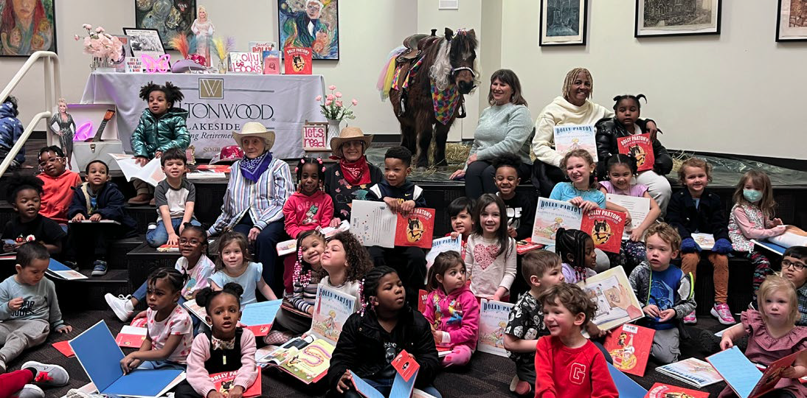

GSA Portfolio
Detroit Music Exhibitt
- Researched, designed, and set up a large 10 panel atrium exhibit featuring the evolution of Detroit’s music scene for Black History Month
Dolly Parton Imagination Reading event
- Helped coordinate, setup, and run an event with local community partners (senior assisted living facility, university library, and elementary school)
- Consisted of storytime, crafts and a special appearance by Macho the miniature horse

Display cases
- Researched, designed, installed displays using material from special collections
Jeheskel (Hezy) Shoshani Library Endowed Collection (formerly known as the Elephant Research Foundation Library)
Built for a donor visit
Motown display
Based on the Detroit Art and Culture Collection
Anatomy-themed display
Based on the Florence Nightingale Collection, Gift from Dr. Gregory Zemenick, and the Shiffman Medical Library Historic Collection
Subject of the Month June 2025
- Researched, designed, and created a topical research libguide on queer anticapitalism
- Physical case was built showcasing materials (did not get pictures, however it was similar size to Motown Display
Interview Committee
- Served on a committee for hiring two new graduate assistants
MeL Map
- Designed a map based on WSU’s history of MeLCat utilizing Flowmap Blue, MapBox API, and Microsoft Excel (optimizing the system for maintainability)
- Created a libguide for it
Safiya Noble Event
- Researched, designed, and created a libguide for a scholar/author visit
- Helped coordinate the logistics of the event
College to Career Libguide
- Designed a libguide highlighting WSU’s College to Career initiative and other career-focused resources
Prison Library Project